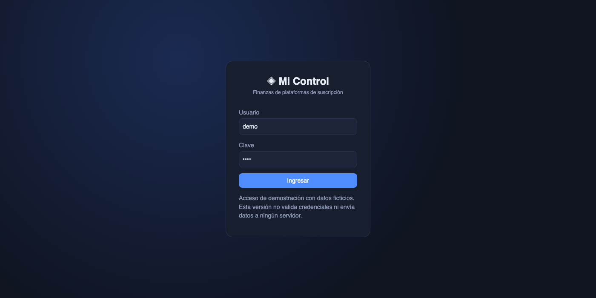
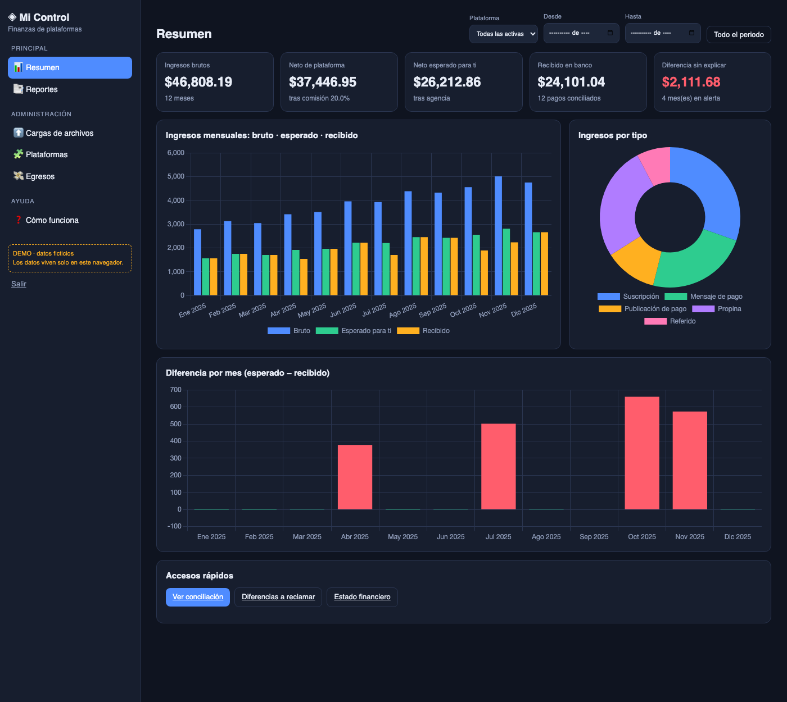
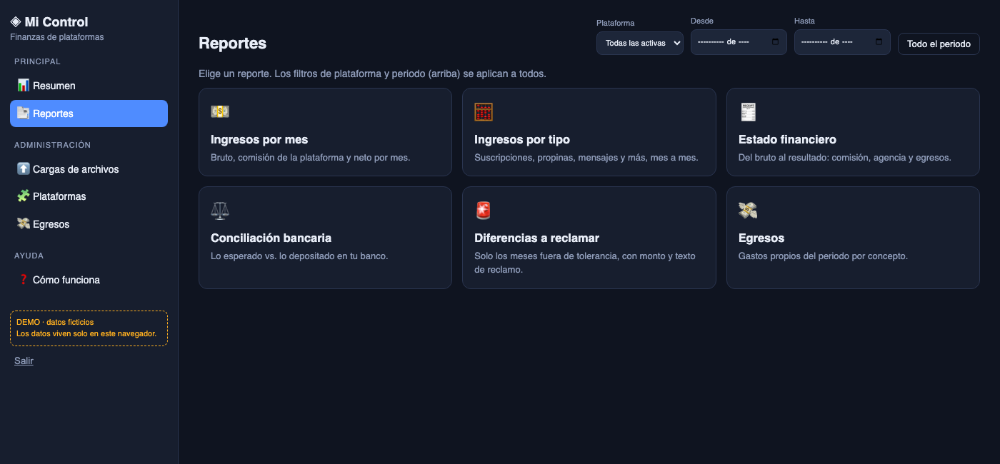
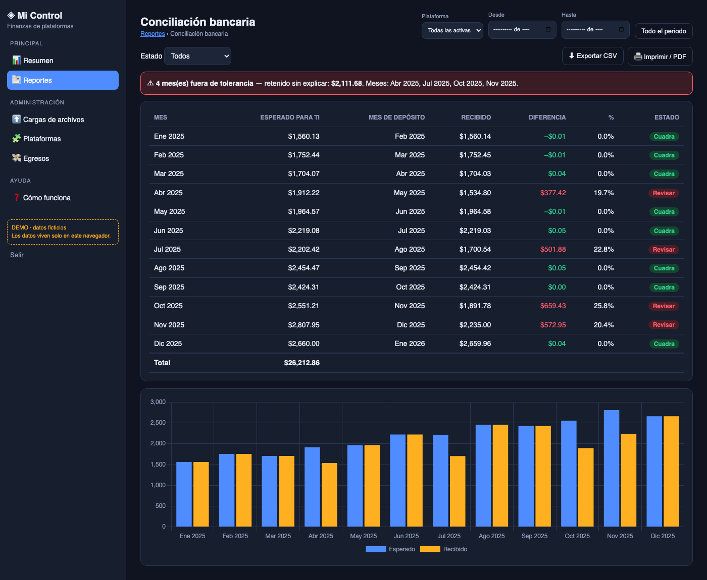
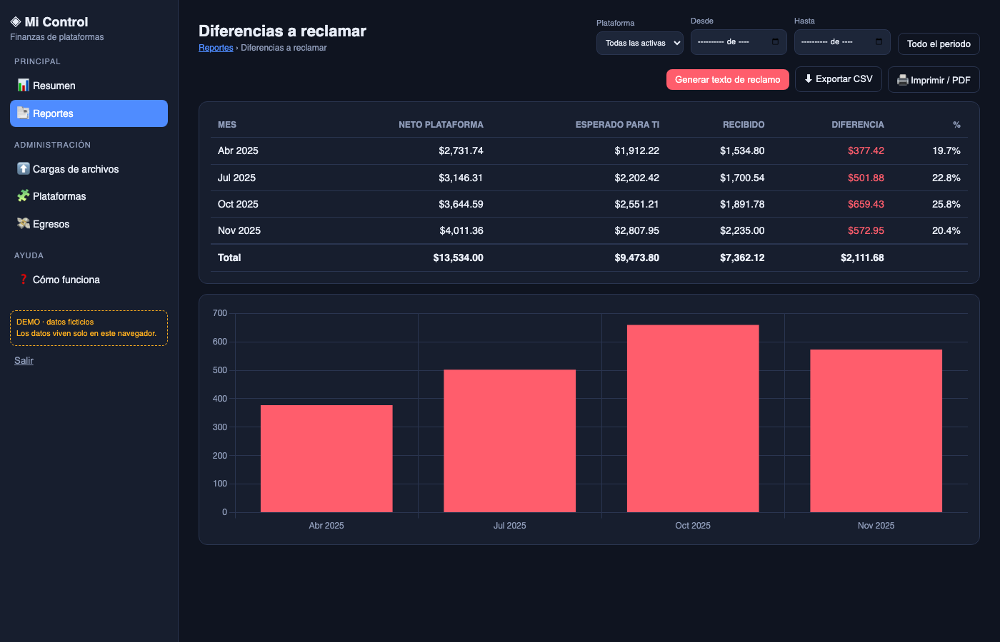
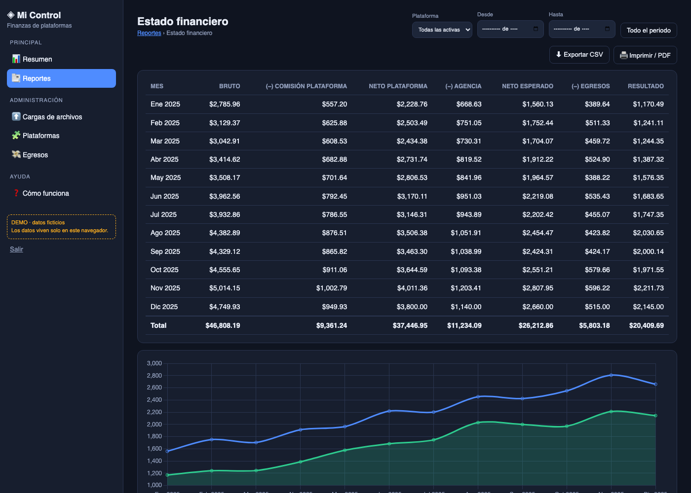
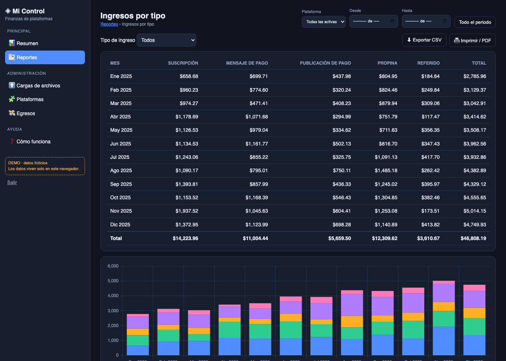
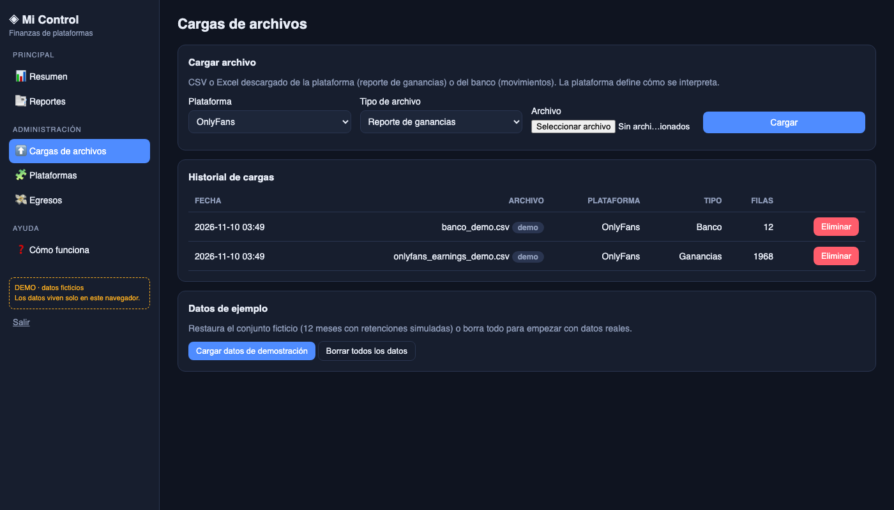
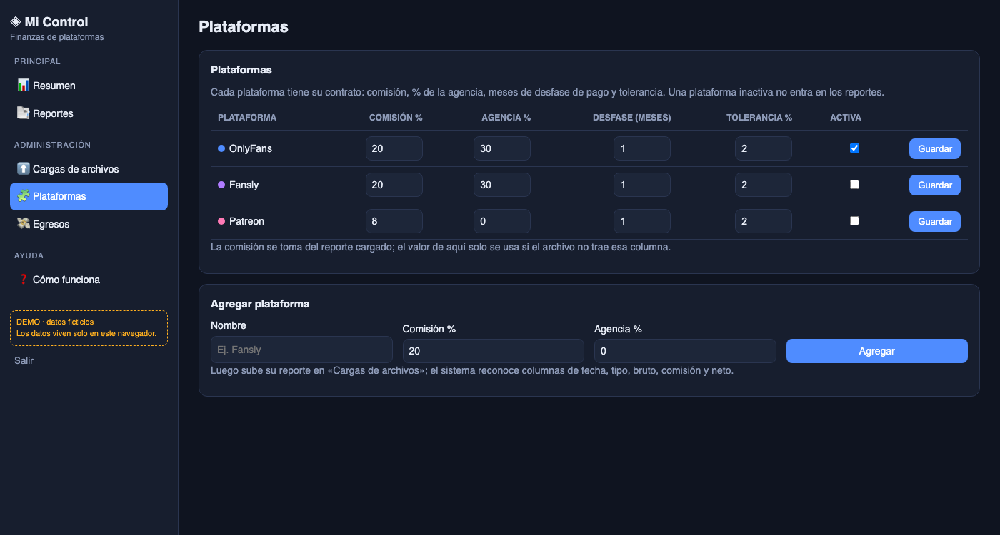
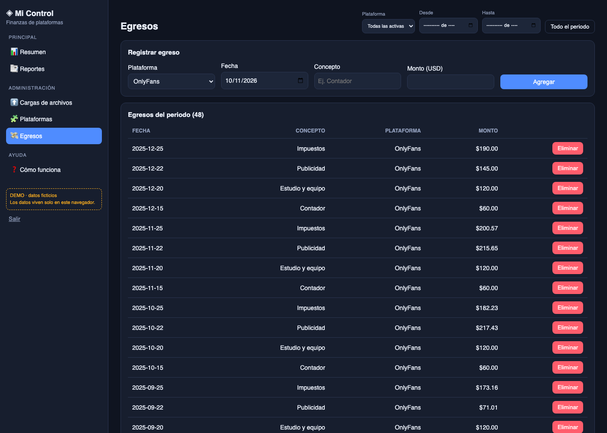

Contar con una página propia, de uso gerencial, para ver con claridad los ingresos de una cuenta de plataforma de suscripción administrada por un tercero (agencia): cuánto se generó, cuánto debería llegar al titular y cuánto realmente llegó al banco. La herramienta debe permitir detectar diferencias no explicadas y quedar abierta para sumar otras plataformas.
| Opción | Viabilidad | Comentario |
|---|---|---|
| Conexión automática por API oficial a OnlyFans | No disponible | La plataforma no ofrece una API pública para creadores ni terceros. Hoy no existe un servicio oficial que consultar. |
| Automatizar con scraping o usando las credenciales de la cuenta | No recomendado | Contraviene los términos de uso, puede bloquear la cuenta y expone las credenciales. Además la cuenta la opera un tercero. |
| Carga manual de reportes (CSV/Excel) | Viable (recomendado) | Quien tenga acceso a la cuenta descarga cada mes el reporte de ganancias del panel; el titular lo carga en la página. Cubre meses vencidos. |
| Conciliación con el estado de cuenta bancario | Viable | El control real contra retenciones indebidas: lo que la plataforma reporta frente a lo que entra al banco, sin depender de la buena fe de ninguna parte. |
| Lectura automática de bancos | Futuro / según banco | Depende de que la entidad ofrezca exportación o servicios de open banking. Mientras tanto, se carga el extracto. |
| Otras plataformas (Fansly, Patreon, etc.) | Viable | Cada una se agrega definiendo el mapeo de columnas de su reporte. En las que tengan API se podrá automatizar. |
Un sistema web pequeño, con acceso, menús y reportes filtrables, que reúne en un solo lugar los ingresos de las plataformas y los contrasta con el banco. Quien lo usa puede entrar a cada reporte, filtrar por plataforma y por periodo, exportar a CSV o imprimir, y administrar plataformas, cargas y egresos.
| Menú | Qué se hace allí |
|---|---|
| Resumen | Indicadores del periodo y gráficos de ingresos, tipos y diferencias. |
| Reportes | Catálogo de seis reportes: Ingresos por mes · Ingresos por tipo · Estado financiero · Conciliación bancaria · Diferencias a reclamar · Egresos. Todos con filtros, totales, gráfico, exportación CSV e impresión. |
| Cargas de archivos | Subir el reporte de ganancias de la plataforma y el extracto bancario (CSV/Excel), con historial y opción de eliminar una carga. |
| Plataformas | Contrato de cada plataforma (comisión, % de la agencia, desfase de pago, tolerancia), activar/desactivar y agregar nuevas. |
| Egresos | Registrar y eliminar gastos propios; alimentan el resultado del estado financiero. |
| Cómo funciona | Guía de uso dentro del sistema. |
Flujo: definir el contrato → cargar reporte de la plataforma y extracto del banco → ver reportes → si un mes no cuadra (supera la tolerancia), el sistema lo marca «Revisar», calcula el monto retenido sin explicar y genera el texto de reclamo con los meses y montos para enviarlo a la agencia.
Privacidad: se trabaja solo con montos e indicadores; no se necesitan datos de suscriptores. En el demo, lo que se carga se guarda solo en el navegador y no se envía a ningún servidor.
Datos ficticios: 12 meses de 2025, con retenciones simuladas en cuatro meses para ilustrar las alertas. Demo publicado: https://bcastro24.github.io/finanzas-suscripciones-demo/ (acceso de muestra: usuario y clave «demo»).










El demo es una aplicación web estática (HTML + JavaScript) cuyo código ya está separado en módulos que equivalen a los servicios futuros (almacenamiento, ingesta, finanzas y conciliación). Para uso continuo se propone pasarlos a un microdesarrollo con servicios pequeños:
| Servicio | Función |
|---|---|
| Ingesta | Recibe CSV/XLSX, valida formato, aplica el mapeo de columnas de cada plataforma y guarda movimientos normalizados. |
| Finanzas | Calcula estado financiero, indicadores y comparativos por mes y plataforma. |
| Conciliación | Cruza ingresos esperados con depósitos bancarios, aplica tolerancias y genera alertas. |
| Conectores (futuro) | Un conector por plataforma o banco que ofrezca API oficial; reemplaza la carga manual donde sea posible. |
Datos y seguridad: base de datos con acceso autenticado y cifrado, usuario único del titular (con doble factor), repositorio privado, sin datos reales en el código, y respaldo. La carga manual evita compartir credenciales de la plataforma con cualquier tercero.
Código del demo: repositorio privado bcastro24/finanzas-suscripciones-demo.